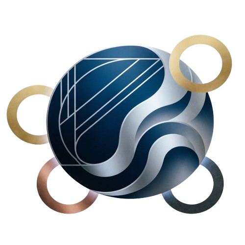

Добро пожаловать в эру межпланетных путешествий.
В 2026 году граница между Землей и космосом стала тоньше, чем когда-либо прежде. AstroVoyage — это первый в мире оператор коммерческих межпланетных перелетов класса люкс, основанный инженерами, астронавтами и мечтателями. Наша миссия проста: сделать созерцание заката на Марсе или прогулку по кольцам Сатурна таким же реальным и безопасным, как отпуск на Мальдивах.
Лунные программы: «Близость к бесконечности»
Длительность:
3 дня / 2 ночи
Маршрут:
Земля → Орбитальная станция Gateway → Посадка на базу «Artemis South» → Земля.
Что включено:
Полет на корабле класса Comfort с искусственной гравитацией 0.8G. Проживание в премиум-модуле с панорамным видом на кратер Шеклтон. Экскурсия на лунном ровере к месту исторической посадки миссий XX века. Ужин при свете «земного восхода». Цена: от $450,000 за человека.
Марсианская программа: «Красная мечта»
Длительность:
7 дней / 6 ночей
Маршрут:
емля → Орбитальная станция Gateway → Перелет к Марсу → База «Olympus Mons» → Земля
Что включено:
Полет на корабле класса Premium с искусственной гравитацией 1G. Проживание в герметичном куполе с видом на долину Маринер. Экскурсия на марсоходе к горе Олимп — самому высокому вулкану Солнечной системы. Сбор образцов марсианского грунта. Наблюдение за двумя лунами Марса — Фобосом и Деймосом.
00 : 00 : 00
Скидка 25%